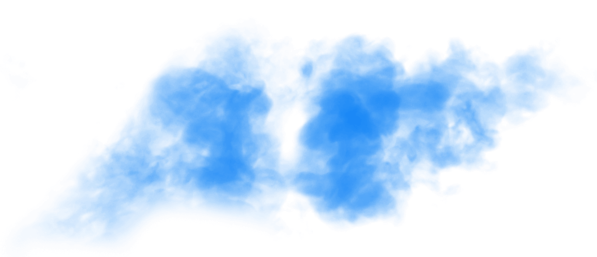
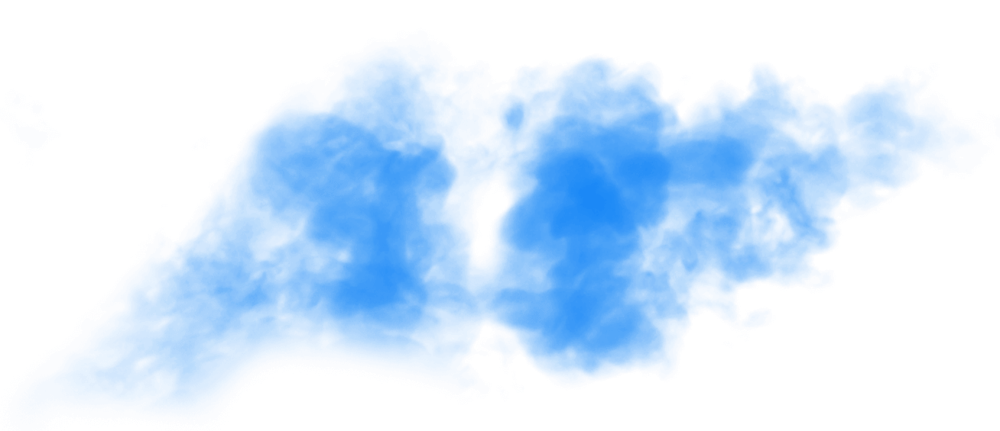

Lade
0 



-


Royal flush
-


Straight flush
-


Vierling
-

-


Flush
-


Straße
-


Drilling
-

-


Paar
-


Höchste Karte


7 Card Stud
Einführung
Willkommen beim beliebtesten Pokerspiel vergangener Tage, bevor Texas Hold'em die Führungsposition übernahm. Seven Card Stud ist die klassische Pokervariante und wurde lange vor dem Aufstieg der Gemeinschaftskarten-Varianten gespielt. Das Spiel ist äußerst anspruchsvoll und fordert den Spielern mehr Aufmerksamkeit und strategische Spielzüge ab.
Es wird angenommen, dass Stud aus dem Mittleren Westen der USA stammt. Diese Pokervariante war während des Amerikanischen Bürgerkrieges von 1861 bis 1865 sehr beliebt unter Soldaten und wurde mit 5 Karten pro Spieler gespielt. Zu Anfang des 20. Jahrhunderts entwickelte sich das Spiel dann zu Seven Card Stud und blieb bis in die Achtziger Jahre das beliebteste Pokerspiel. Seine komplexe Spielweise sorgt für echtes Poker-Feeling und wird weltweit geschätzt.
Beim Seven Card Stud stehen die Einsätze normalerweise fest, d. h. Spieler können innerhalb einer Spielrunde nur einen begrenzten Geldbetrag einsetzen.
Schnelleinstieg
Seven Card Stud ist eine Pokervariante für zwei bis acht Spieler mit 52 Karten ohne Joker. Eine Spielrunde besteht aus fünf Einsatzrunden. Jeder Spieler zahlt anfangs einen auch als „Ante“ bezeichneten Eröffnungseinsatz in den Pot ein. Jedem Spieler werden anschließend zwei verdeckte Taschenkarten und eine offene „Door Card“ ausgeteilt.
Der Spieler mit der niedrigsten Door Card muss den Bring-In-Betrag setzen (ein erzwungener Einsatz, der einem Blind in Hold'em entspricht). Dieser beträgt in der Regel 30 – 50 % des Mindesteinsatzes. Beim Bring-In gilt die Kreuz-2 als niedrigste Karte im Spiel. Spieler, die eine gesamte Spielrunde hindurch aktiv bleiben, erhalten im Verlauf des Spiels insgesamt drei verdeckte und vier offene Karten. Es werden keine Gemeinschaftskarten offen ausgeteilt. Der Spieler, der die höchstwertige Pokerhand aus fünf beliebigen seiner Karten zusammenstellt, gewinnt den Pot.
Einsatzlimits
Der Einsatzbetrag hängt von den Mindest- und Höchsteinsätzen des jeweiligen Tisches ab. Pro Tisch gelten unterschiedliche Einsatzlimits. Spieler können sich also einen Tisch mit dem Betrag aussuchen, den sie bereit sind einzusetzen. Der Mindesteinsatz eines Tisches entspricht immer der Hälfte des jeweiligen Höchsteinsatzes. Beispiele sind $ 1/$ 2- oder $ 5/$ 10-Tische.
Ziel
Ziel ist es, das Geld/die Chips im Pot zu gewinnen – entweder durch Erreichen einer höherwertigen Pokerhand als die restlichen Spieler oder indem man durch Bluffen andere Spieler zum Aussteigen bewegt. Eine Pokerhand setzt sich aus fünf beliebigen der insgesamt sieben Karten eines Spielers zusammen.
7 Card Stud Aufbau
Einleitung
Vor der Teilnahme an Seven Card Stud müssen Spieler einen Mindestbetrag an Chips erwerben. Das Mindest-Buy-In entspricht in der Regel dem Zehnfachen des Mindesteinsatzes an einem bestimmten Tisch, also muss ein Spieler an einem $ 1/$ 2-Tisch Chips mit einem Mindestwert von $ 10 kaufen.
Sobald alle Spieler mit der entsprechenden Menge an Chips an einem bestimmten Tisch Platz nehmen, müssen vor Spielbeginn noch einige Schritte ausgeführt werden.
Als Erstes müssen alle Spieler ein Ante in den Pot zahlen, um diesen anzureichern. Als Nächstes werden allen Spielern zwei verdeckte und eine offene Karte ausgeteilt. Sobald bestimmt wurde, welcher Spieler das Bring-In zu entrichten hat, wird die Einsatzrunde nacheinander im Uhrzeigersinn fortgesetzt.
Mindesteinsatz des Tisches
Der Mindesteinsatz an einem Tisch ist das untere Einsatzlimit in einem Spiel. Einsatzlimits sind an jedem Tisch festgelegt und von Tisch zu Tisch unterschiedlich, sodass Spieler vorab entscheiden können, wie viel sie bereit sind einzusetzen.
Höchsteinsatz des Tisches
Der Höchsteinsatz an einem Tisch ist das obere Einsatzlimit in einem Spiel. Der Höchsteinsatz entspricht in der Regel dem Doppelten des Mindesteinsatzes an einem Tisch.
Dealer
Der Dealer ist eine Position am Tisch, die mit einem „D“ gekennzeichnet ist. Die Dealer-Position beim Seven Card Stud-Poker bestimmt, in welcher Reihenfolge Karten an die Spieler ausgeteilt werden.
Ante
Vor dem Austeilen der ersten Karten muss jeder Spieler ein Ante entrichten. Antes sind obligatorische Eröffnungseinsätze für alle Spieler, die an einer Spielrunde teilnehmen möchten. Es entspricht in der Regel 10 % des Mindesteinsatzes.
7 Card Stud Die „Third Street“
Einleitung
Mit dem Wort „Street“ (Straße) wird beim Seven Card Stud-Poker eine Einsatzrunde bezeichnet. Der Begriff entspricht der Anzahl der an einen Spieler ausgeteilten Karten, in diesem Fall zwei verdeckte und eine dritte, offene Karte, von der der Name Third Street stammt.
Der Spieler mit der niedrigsten Door Card muss den Bring-In-Betrag setzen (ein erzwungener Einsatz, der einem Blind in Hold'em entspricht). Beim Bring-In gilt die Kreuz-2 als niedrigste Karte im Spiel. Dies ist das einzige Mal im Spiel, bei dem die Farben eine Rolle spielen. Der Bring-In-Betrag entspricht in der Regel 30 – 50 % des Mindesteinsatzes. Dieser Spieler hat 2 Optionen: den Bring-In-Betrag entrichten oder den Einsatz durch Anheben auf den Mindesteinsatz am Tisch „vervollständigen“. Nach dem Entrichten des Bring-Ins läuft die Einsatzrunde im Uhrzeigersinn um den Tisch, von einem Spieler zum nächsten. Jeder Spieler hat folgende Möglichkeiten: mitgehen, erhöhen oder aussteigen.
Alle Einsatzerhöhungen müssen in der ersten Spielrunde dem Mindesteinsatz bis maximal dem Vierfachen des Mindesteinsatzes entsprechen.
Taschenkarten
Nachdem alle Spieler ein Ante entrichtet haben, teilt der Dealer jedem Spieler zwei verdeckte Karten aus. Die Karten werden einzeln im Uhrzeigersinn ausgeteilt, angefangen beim Spieler, der direkt links vom Dealer sitzt. Diese Karten werden als „Taschenkarten“ bezeichnet.
Door Card
Nach dem Austeilen der Taschenkarten teilt der Dealer jedem Spieler eine offene Karte aus. Diese auch als „Door Cards“ bezeichneten Karten sind für alle Spieler offen sichtbar. Die Karten werden im Uhrzeigersinn ausgeteilt, angefangen beim Spieler, der direkt links vom Dealer sitzt.
Bring-In
Der Spieler mit der niedrigsten Door Card eröffnet die erste Einsatzrunde. Dieser Spieler muss den als „Bring-In“ bezeichneten Pflichteinsatz entrichten, der in der Regel 30 – 50 % des Mindesteinsatzes entspricht. Dieser Spieler hat zwei Optionen: den Bring-In-Betrag entrichten oder den Einsatz durch Anheben auf den Mindesteinsatz am Tisch „vervollständigen“.
Hat mehr als ein Spieler die Door Card mit dem niedrigsten Wert, bestimmt die Farbe, welcher Spieler das Bring-In entrichten muss. Ihre Rangfolge von niedrigste bis höchste Farbe lautet: Kreuz, Karo, Herz, Pik. (Beim Bring-In gilt die Kreuz-2 als niedrigste Karte im Spiel.)
Nach dem Entrichten des Bring-Ins läuft die Einsatzrunde im Uhrzeigersinn um den Tisch, von einem Spieler zum nächsten.
Einsatzoptionen
Nachdem der erste Spieler das Bring-In entrichtet hat, haben die weiteren Spieler folgende Optionen: mitgehen, erhöhen oder aussteigen. In der ersten Einsatzrunde können die Spieler mindestens den Bring-In-Betrag oder ein Vielfaches davon bis maximal den Mindesteinsatz des Tisches setzen.
Mitgehen
Mitgehen bedeutet, denselben Einsatz wie der vorherige Spieler zu entrichten. Der erste Einsatz nach dem Bring-In muss diesem Betrag entweder entsprechen oder ihn erhöhen.
Erhöhen
Erhöhen bedeutet den vom vorherigen Spieler entrichteten Einsatzbetrag zu erhöhen.
Mit dem ersten Erhöhen nach dem Bring-In muss der Mindesteinsatz des Tisches vervollständigt werden, d. h. der Spieler muss die andere Hälfte des Mindesteinsatzes am Tisch entrichten. Alle nachfolgenden Erhöhungen müssen dem Mindesteinsatz entsprechen. Da es sich beim 7 Card Stud um ein Spiel mit festen Einsätzen handelt, können die Einsätze in jeder Runde auf das bis zu 4-Fache des Einsatzlimits erhöht werden.
Aussteigen
Aussteigen bedeutet, die Hand nicht zu spielen. Wenn Sie sich entschließen auszusteigen, können Sie sich erst wieder zu Beginn einer neuen Spielrunde an den Einsätzen beteiligen.
Ende der Einsatzrunde
Die Einsatzrunde endet, wenn alle Spieler, die nicht ausgestiegen sind, die gleichen Einsätze in den Pot eingezahlt haben.
7 Card Stud Die „Fourth Street“
Einleitung
Wenn die erste Einsatzrunde abgeschlossen ist und alle aktuellen Einsätze in den Pot eingezahlt wurden, wird jedem Spieler, der noch am Spiel teilnimmt, eine weitere Karte (offen) ausgeteilt. Es beginnt die zweite Einsatzrunde.
Ab dieser Runde fängt immer der Spieler mit den jeweils höchsten Door Cards an. Er hat die Wahl, entweder zu schieben (keinen Einsatz zu entrichten) oder den Mindesteinsatz zu setzen. Wenn der Spieler mit den höchsten Door Cards ein Paar hat, hat er zusätzlich die Möglichkeit, den doppelten Mindesteinsatz zu setzen.
Die Einsatzrunde läuft im Uhrzeigersinn um den Tisch. Jeder Spieler hat folgende Möglichkeiten: mitgehen, erhöhen oder aussteigen. Ohne vorherigen Einsatz haben Spieler auch die Möglichkeit zu schieben.
Alle Einsatzerhöhungen in der zweiten Runde müssen dem Mindesteinsatz entsprechen (es sei denn, der Spieler mit den höchsten offenen Karten hat ein Paar und beschließt, auf den Höchsteinsatz des Tisches zu erhöhen).
Die „Fourth Street“
Jedem aktiven Spieler wird eine offene Door Card ausgeteilt. Nun hat jeder aktive Spieler insgesamt vier Karten: zwei verdeckte Taschenkarten und zwei offene Karten. Bei der Fourth Street findet außerdem eine zweite Einsatzrunde statt.
Der Eröffnungsspieler
Der aktive Spieler mit der höchstwertigen Hand eröffnet die zweite Einsatzrunde. Die offenen Karten werden in derselben Reihenfolge wie Pokerhände gewertet. Bei der Fourth Street ist die beste Hand zwei Asse (Beispiel: A♠-A♥), die Hand mit dem niedrigsten Wert besteht aus den niedrigsten Karten derselben Farbe (2♣- 3♣). Ein Paar ist immer höher als zwei beliebige Karten, die kein Paar sind. Beispiel: 2♠-2♥ ist höher als A♠-K♥.
Der erste Spieler hat folgende Möglichkeiten: Er kann schieben (keinen Einsatz machen und das Recht zum Handeln an den nächsten aktiven Spieler im Spiel weiterreichen) oder den Mindesteinsatz entrichten. Wenn der Spieler mit der höchstwertigen Hand ein Paar hat, hat er darüber hinaus die Möglichkeit, den Höchsteinsatz am Tisch zu setzen. Anschließend läuft die Einsatzrunde im Uhrzeigersinn um den Tisch, von einem Spieler zum nächsten.
Einsatzoptionen
In der zweiten Einsatzrunde haben die Spieler folgende Möglichkeiten: schieben, mitgehen, erhöhen oder aussteigen. Das Einsatzlimit in dieser Runde entspricht dem Mindesteinsatz am Tisch, es sei denn, der Eröffnungsspieler hatte ein Paar und hat den Einsatz auf den Höchsteinsatz am Tisch erhöht. In dem Fall wird dieser neue Einsatzbetrag in der aktuellen Spielrunde zum Mindesteinsatz.
Ende der Einsatzrunde
Die Einsatzrunde endet, wenn alle Spieler, die nicht ausgestiegen sind, die gleichen Einsätze in den Pot eingezahlt haben. Wenn alle Spieler in der aktuellen Einsatzrunde schieben und somit keine neuen Einsätze in den Pot kommen, bleibt die Geldsumme im Pot die gleiche wie bei der Third Street. Wenn alle Spieler bis auf einen in der aktuellen Runde aussteigen, gewinnt der Spieler, der nicht ausgestiegen ist, den Pot, und die Einsatzrunde ist zu Ende.
7 Card Stud Die „Fifth Street“
Einleitung
Wenn die zweite Einsatzrunde abgeschlossen ist und alle aktuellen Einsätze in den Pot eingezahlt wurden, wird jedem Spieler, der noch am Spiel teilnimmt, eine weitere offene Karte ausgeteilt. Es beginnt die dritte Einsatzrunde.
Der Spieler mit den höchstwertigen offenen Karten eröffnet die Runde. Er hat die Wahl, entweder zu schieben (keinen Einsatz zu entrichten) oder den Höchsteinsatz des Tisches zu setzen. Anschließend läuft die Einsatzrunde im Uhrzeigersinn um den Tisch. Jeder Spieler hat folgende Möglichkeiten: mitgehen, erhöhen oder aussteigen. Ohne vorherigen Einsatz haben Spieler auch die Möglichkeit zu schieben.
Ab der Fifth Street müssen alle Einsatzerhöhungen dem Höchsteinsatz des Tisches entsprechen.
Die „Fifth Street“
Jedem aktiven Spieler wird eine offene Door Card ausgeteilt. Nun hat jeder aktive Spieler insgesamt fünf Karten: zwei verdeckte und drei offene Karten. „Fifth Street“ ist auch der Name dieser dritten Einsatzrunde.
Der Eröffnungsspieler
Der aktive Spieler mit den höchstwertigen offenen Karten eröffnet die dritte Einsatzrunde.
Dieser erste Spieler hat folgende Möglichkeiten: schieben (keinen Einsatz entrichten) oder den Höchsteinsatz am Tisch setzen. Anschließend läuft die Einsatzrunde im Uhrzeigersinn um den Tisch, von einem Spieler zum nächsten.
Einsatzoptionen
Bei der Fifth Street haben Spieler dieselben Einsatzoptionen wie in der vorigen Runde: schieben, mitgehen, erhöhen oder aussteigen. Der Einsatzbetrag in dieser Runde entspricht dem Höchstbetrag am Tisch.
Ende der Einsatzrunde
Die Einsatzrunde endet, wenn alle Spieler, die nicht ausgestiegen sind, die gleichen Einsätze in den Pot eingezahlt haben. Wenn alle Spieler in der aktuellen Einsatzrunde schieben und somit keine neuen Einsätze in den Pot kommen, bleibt die Geldsumme im Pot die gleiche wie bei der Fourth Street. Wenn alle Spieler bis auf einen in der aktuellen Runde aussteigen, gewinnt der Spieler, der nicht ausgestiegen ist, den Pot, und die Einsatzrunde ist zu Ende.
7 Card Stud Die „Sixth Street“
Einleitung
Wenn die dritte Einsatzrunde abgeschlossen ist und alle aktuellen Einsätze in den Pot eingezahlt wurden, wird jedem Spieler, der noch am Spiel teilnimmt, eine weitere offene Karte ausgeteilt. Es beginnt die vierte Einsatzrunde.
Der Spieler mit den höchstwertigen offenen Karten eröffnet die Runde. Er hat die Wahl, entweder zu schieben (keinen Einsatz zu entrichten) oder den Höchsteinsatz des Tisches zu setzen. Anschließend läuft die Einsatzrunde im Uhrzeigersinn um den Tisch. Jeder Spieler hat folgende Möglichkeiten: mitgehen, erhöhen oder aussteigen. Ohne vorherigen Einsatz haben Spieler auch die Möglichkeit zu schieben.
Alle Einsatzerhöhungen müssen dem Höchsteinsatz am Tisch entsprechen.
Die „Sixth Street“
Während der Sixth Street wird jedem aktiven Spieler eine vierte offene Karte ausgeteilt. Nun hat jeder aktive Spieler insgesamt sechs Karten: zwei verdeckte und vier offene Karten. „Sixth Street“ ist auch der Name dieser vierten Einsatzrunde.
Der Eröffnungsspieler
Der aktive Spieler mit den höchstwertigen offenen Karten eröffnet die dritte Einsatzrunde.
Dieser erste Spieler hat folgende Möglichkeiten: schieben (keinen Einsatz entrichten) oder den Höchsteinsatz am Tisch setzen. Anschließend läuft die Einsatzrunde im Uhrzeigersinn um den Tisch, von einem Spieler zum nächsten.
Einsatzoptionen
Bei der Sixth Street haben Spieler dieselben Einsatzoptionen wie in der vorigen Runde: schieben, mitgehen, erhöhen oder aussteigen. Der Einsatzbetrag in dieser Runde entspricht ebenfalls dem Höchstbetrag am Tisch.
Ende der Einsatzrunde
Die Einsatzrunde endet, wenn alle Spieler, die nicht ausgestiegen sind, die gleichen Einsätze in den Pot eingezahlt haben. Wenn alle Spieler in der aktuellen Einsatzrunde schieben und somit keine neuen Einsätze in den Pot kommen, bleibt die Geldsumme im Pot die gleiche wie bei der Fifth Street. Wenn alle Spieler bis auf einen in der aktuellen Runde aussteigen, gewinnt der Spieler, der nicht ausgestiegen ist, den Pot, und die Einsatzrunde ist zu Ende.
7 Card Stud Der „River“
Einleitung
Wenn die vierte Einsatzrunde abgeschlossen ist und alle aktuellen Einsätze in den Pot eingezahlt wurden, wird jedem Spieler, der noch am Spiel teilnimmt, eine letzte, verdeckte Taschenkarte ausgeteilt. Es beginnt die fünfte und letzte Einsatzrunde. Diese wird auch als „River“ bezeichnet.
Der Spieler mit den höchstwertigen offenen Karten eröffnet die Runde. Er hat die Wahl, entweder zu schieben (keinen Einsatz zu entrichten) oder den Höchsteinsatz des Tisches zu setzen. Anschließend läuft die Einsatzrunde im Uhrzeigersinn um den Tisch. Jeder Spieler hat folgende Möglichkeiten: mitgehen, erhöhen oder aussteigen. Ohne vorherigen Einsatz haben Spieler auch die Möglichkeit zu schieben.
Alle Einsatzerhöhungen müssen dem Höchsteinsatz am Tisch entsprechen.
Der „River“
Jedem Spieler wird eine letzte, verdeckte Karte ausgeteilt. Nun haben alle aktiven Spieler insgesamt sieben Karten: drei verdeckte und vier offene Karten.
Im seltenen Fall, dass alle 8 Spieler noch am River teilnehmen, verbleiben jedoch lediglich vier Karten im Stapel. Es wären also nicht mehr genügend Karten übrig, um jedem Spieler abschließend eine eigene verdeckte Karte auszuteilen. In solch einem Fall wird eine Gemeinschaftskarte offen auf den Tisch gelegt, die alle Spieler für die Zusammenstellung ihrer Pokerhand nutzen können.
Eröffnungsspieler
Der aktive Spieler mit den höchstwertigen offenen Karten eröffnet die dritte Einsatzrunde.
Dieser erste Spieler hat folgende Möglichkeiten: schieben (keinen Einsatz entrichten) oder den Höchsteinsatz am Tisch setzen. Anschließend läuft die Einsatzrunde im Uhrzeigersinn um den Tisch, von einem Spieler zum nächsten.
Einsatzoptionen
Beim River haben Spieler dieselben Einsatzoptionen wie in der vorigen Runde: schieben, mitgehen, erhöhen oder aussteigen. Der Einsatzbetrag in dieser Runde entspricht ebenfalls dem Höchstbetrag am Tisch.
Ende der Einsatzrunde
Die Einsatzrunde endet, wenn alle Spieler, die nicht ausgestiegen sind, die gleichen Einsätze in den Pot eingezahlt haben. Wenn alle Spieler in der aktuellen Einsatzrunde schieben und somit keine neuen Einsätze in den Pot kommen, bleibt die Geldsumme im Pot die gleiche wie bei der Sixth Street. Wenn alle Spieler bis auf einen in der aktuellen Runde aussteigen, gewinnt der Spieler, der nicht ausgestiegen ist, den Pot, und die Einsatzrunde ist zu Ende.
7 Card Stud Der Showdown
Einleitung
Wenn die fünfte und letzte Einsatzrunde abgeschlossen ist und alle Einsätze in den Pot eingezahlt wurden, müssen alle Spieler, die noch am Spiel teilnehmen, ihre Karten aufdecken. Ein Showdown ist nur möglich, wenn mehr als ein aktiver Spieler übrig ist.
Gewinner ist der Spieler mit der besten Kombination aus fünf Karten, die auch als Hand bezeichnet wird. Wenn zu diesem Zeitpunkt nur noch ein Spieler übrig ist, gewinnt dieser automatisch alles Geld im Pot.
Die Hand
Beim Seven Card Stud können Spieler ihre beste Pokerhand aus beliebigen fünf ihrer insgesamt sieben Karten zusammenstellen.
Die Reihenfolge beim Showdown
Der Spieler mit der besten offenen Hand deckt seine Karten als Erster auf, es sei denn, in der River-Runde wurde noch gesetzt. In dem Fall muss der Spieler, der zuletzt gesetzt bzw. den Einsatz erhöht hat, als Erster seine Karten aufdecken. Ziel der Spieler ist es, mit beliebigen fünf ihrer sieben Karten die beste Pokerhand zusammenzustellen. Spieler decken im Uhrzeigersinn nacheinander ihre Karten auf.
Der Gewinner
Gewinner ist der Spieler mit der besten Kombination aus fünf Karten, die auch als Hand bezeichnet wird.
7 Card Stud Tipps
Tipp 1
Beim Seven Card Stud gibt es keine Gemeinschaftskarten, es sei denn, alle 8 Spieler bleiben bis zur River-Runde im Spiel. In dem Fall wären nicht mehr genügend Karten im Stapel übrig, um jedem Spieler abschließend eine eigene verdeckte Karte auszuteilen. Daher wird eine Gemeinschaftskarte offen auf den Tisch gelegt, die alle Spieler für die Zusammenstellung ihrer Pokerhand nutzen können.
Tipp 2
Die Position des Dealers ist beim Seven Card Stud nicht so wichtig wie bei anderen Pokervarianten, da diese Position nicht bestimmt, wer dran ist. Beim Seven Card Stud werden die Einsatzrunden ab der Fourth Street von dem Spieler mit den höchsten Door Cards eröffnet.
7 Card Stud Spielen
Stud Poker besitzt eine einzigartige Anziehungskraft, die einfach dazu animiert, mehr zu spielen. Es verlangt Geduld und das nötige Maß an Fähigkeiten, um in dieser Form des Pokers wirklich gut zu werden, aber es ist die Mühe wert.
Das Herunterladen der hochmodernen Pokersoftware ist kinderleicht – also nichts wie ran an die Tische.
Beginnen Sie mit unseren Demospieltischen für Anfänger und setzen Sie das hier Gelernte dort um. Mit unseren Boni, für die keine Einzahlung erforderlich ist, können Sie auch an unseren Echtgeldtischen umsonst spielen. Oder nehmen Sie kostenlos an Veranstaltungen wie den monatlich stattfindenden Twitter- und Facebook-Gratisturnieren teil.
Ist es nicht an der Zeit, bei 888poker zu spielen?
7 Card Stud Regeln-
Royal flush
Der Royal Flush ist die absolut beste mögliche Kartenkombination beim Poker. Er besteht aus fünf Karten derselben Farbe, aufsteigend von der 10 bis zum Ass. Diese Hand kann nicht übertroffen werden und Sie können sicher sein, den Pot oder zumindest einen Teil davon zu gewinnen.
Denken Sie daran, beim Poker sind alle Spielkartenfarben gleichwertig. Es kann vorkommen, dass zwei oder mehr Spieler einen Royal Flush auf der Hand haben, aber dies ist höchst unwahrscheinlich. In solch einem Fall wird der Pot zwischen diesen Spielern aufgeteilt.
Der Royal Flush ist eine Art des Straight Flush und wird als die seltenste Pokerhand-Kombination angesehen. Es gibt nur vier mögliche Royal-Flush-Hände, eine für jede Kartenfarbe. Die Chance, einen Royal Flush zu erhalten, ist minimal und liegt bei 0,00015 %. Wenn Sie jedoch das Glück haben, dann können Sie mit einem Royal Flush mit 100%iger Sicherheit All-In gehen.
-
Straight flush
Der Straight Flush ist die höchste aller Pokerhände. Er besteht aus fünf Karten in Reihenfolge, alle von derselben Kartenfarbe. Gibt es beim Showdown mehr als einen Straight Flush, dann gewinnt der Spieler mit der höchsten Karte den Pot.
Da beim Poker alle Kartenfarben gleichwertig sind, kann es vorkommen, dass mehrere Spieler einen Straight Flush mit demselben Kartenwert vorweisen. In diesem Fall wird der Pot zwischen ihnen aufgeteilt. Das Ass (A) kann sowohl als höchste (A - K - Q - J - 10) als auch als niedrigste Karte (5 - 4 - 3 - 2 - A) stehen. Im ersten Beispiel handelt es sich bei der Hand um einen Royal Flush – die bestmögliche 5-Karten-Kombination. Das zweite Beispiel zeigt den niedrigsten möglichen Straight Flush.
Beim Poker gibt es 40 mögliche Straight Flushs, einschließlich der vier Royal Flushs. Die Chancen, dass Ihnen ein Straight Flush ausgeteilt wird, sind mit 0,00139 % ziemlich gering.
-
Vierling
Der Vierling, auch bekannt als Four-of-a-kind, ist die nächst höhere Hand nach dem Starting Flush. Er besteht aus beliebigen vier Karten vom gleichen Wert sowie einer beliebigen weiteren Karte. Gibt es beim Showdown mehrere Spieler mit einem Vierling, dann gewinnt derjenige mit den höchsten vier Karten den Pot.
In Pokerspielen mit Gemeinschaftskarten können mehrere Spieler denselben Vierling haben. Der Gewinner ist dann derjenige mit der höchsten fünften Karte, auch als „Kicker“ bezeichnet.
Es gibt 624 Möglichkeiten für eine Hand mit einem Vierling. Die beste besteht aus vier Assen, die niedrigste aus 2 - 2 - 2 - 2. Die Chancen, einen Vierling zu erhalten, sind mit 0,024 % immer noch sehr niedrig.
-
Full House
Das Full House ist die nächsthöhere Hand nach dem Vierling. Es besteht aus drei Karten eines Kartenwertes und zwei Karten eines anderen Kartenwertes. Gibt es beim Showdown mehrere Full Houses, dann gewinnt der Spieler mit den drei höchsten Karten den Pot. In Pokerspielen mit Gemeinschaftskarten besteht die Möglichkeit, dass mehrere Spieler drei gleichwertige Karten vom Board teilen. In diesem Fall gewinnt der Spieler mit dem höheren Paar den Pot.
Es gibt 3744 mögliche Kombinationen für ein Full House. Die höchstmögliche besteht aus drei Assen und zwei Königen (A - A - A - K - K), die niedrigste aus 2 - 2 - 2 - 3 - 3. Die Wahrscheinlichkeit, ein Full House zu erhalten, liegt bei 0,1441 %.
-
Flush
Der Flush ist eine ziemlich starke Pokerhand. Er besteht aus fünf Karten einer Farbe, jedoch nicht in Reihenfolge. Gibt es beim Showdown mehr als einen Flush, dann gewinnt der Spieler mit der höchsten Karte den Pot. Haben zwei Spieler die gleiche höchste Karte in ihrer Hand, dann wird die zweithöchste verglichen usw. bis eine Differenz gefunden wird. Gibt es keine Unterschiede zwischen den beiden Händen, teilen sich die Spieler den Pot. Denken Sie daran, dass Kartenfarben im Poker gleichwertig sind. Es macht also keinen Unterschied, aus welcher Farbe Sie Ihre Hand bilden.
Es gibt 5108 mögliche Kombinationen und die Chance, einen Flush zu erhalten, liegt bei 0,1965 %.
-
Straße
Die Straße (Straight) ist eine Pokerhand, die aus fünf Karten in einer Reihenfolge und aus mindestens zwei verschiedenen Kartenfarben besteht. Gibt es beim Showdown mehr als eine Straße, dann gewinnt der Spieler mit der höchsten Karte den Pot. Ist die höchste Karte bei den Straßen gleichrangig, dann wird der Pot zwischen den Spielern aufgeteilt. Beim Poker sind alle Spielkartenfarben gleichwertig, sie können nicht zur Bestimmung eines Gewinners verwendet werden.
Das Ass (A) kann in einer Straße sowohl als höchste (A - K - Q - J - 10) als auch als niedrigste Karte (5 - 4 - 3 - 2 - A) stehen. Das erste Beispiel, auch bekannt als „Broadway“, zeigt die höchste Straße. Im Gegensatz dazu ist das zweite Beispiel, in der Pokersprache „Wheel“ genannt, die niedrigste mögliche Straße.
Es gibt 10.240 mögliche Straßen-Kombinationen und damit eine 0,39%ige Chance, eine Straße ausgeteilt zu bekommen.
-
Drilling
Der Drilling (Three-of-a-kind) ist die nächsthöhere Hand nach dem Staring. Sie besteht aus beliebigen drei Karten vom gleichen Wert sowie zwei beliebigen weiteren Karten. Gibt es beim Showdown zwei oder mehr Spieler mit einem Drilling, dann bestimmt die höchste vierte Karte, auch als „Kicker“ bezeichnet, den Gewinner. Konnte die vierte Karte den Gewinner nicht bestimmen, wird die fünfte Karte herangezogen. In dem Fall, in dem alle aufgedeckten Hände mit Drillingen gleichwertig sind, wird der Pot zwischen den Gewinnern aufgeteilt.
In Texas Hold’em und anderen Flop-Spielen werden Drillinge als „Set“ bezeichnet. Das bedeutet, dass ein Spieler ein Paar in seinen Hole Cards (verdeckten Karten) besitzt und eine gleichwertige Karte auf dem Board liegt, z.B. 5 - 5 in seinen Hole Cards und 5 auf dem Board. Eine andere Möglichkeit für Drillinge ist das sogenannte „Trips“. Es wird aus einem Paar auf dem Board und einer Hole Card gebildet, z.B. 5 - 5 - 4 auf dem Board und fünf in den Hole Cards.
Es gibt 54,912 Möglichkeiten für eine Hand mit Drillingen. Die Wahrscheinlichkeit, eine solche Kombination zu erhalten, liegt bei 2,1128 %.
-
Zwei Paare
Zwei Paare sprechen für sich selbst. Das ist einfach eine Pokerhand, die aus zwei Paaren unterschiedlichen Wertes und einer weiteren Karte besteht. Gibt es mehrere Spieler mit zwei Paaren, dann werden sie anhand ihres jeweils höchsten Paares verglichen. Derjenige mit den beiden besten Paaren gewinnt den Pot. Sind die beiden höchsten Paare gleichwertig, bestimmt das zweite Paar den Gewinner. Kann der Gewinner nicht anhand der Paare bestimmt werden, dann erhält der Spieler mit der höchsten fünften Karte, auch „Kicker“ genannt, das ganze Geld aus dem Pot. Auch ist es möglich, dass beide Spieler zwei absolut gleiche Paare haben. In diesem Fall wird der Pot zwischen ihnen aufgeteilt.
Es gibt 123.552 mögliche Hände mit zwei Paaren, wodurch dieses eine der häufigsten Gewinnhände ist.. Die Chance, eine solche Hand ausgeteilt zu bekommen, liegt bei 4,7539 %.
-
Paar
Ein Paar ist eine Pokerhand, die aus zwei Karten desselben Wertes und drei anderen beliebigen Karten besteht.. Haben zwei oder mehr Spieler ein Paar, dann gewinnt der Spieler mit dem höchstwertigen Paar den Pot. Haben mehrere Spieler das gleiche Paar, dann wird der Gewinner anhand der anderen drei Karten, der „Kicker“, bestimmt. Der Spieler mit der höchsten nicht im Paar befindlichen Karte gewinnt das ganze Geld im Pot. Im Fall, dass mehrere Spieler ein Paar und die zusätzlichen Karten vom selben Wert haben, wird der Pot zwischen ihnen aufgeteilt.
Es gibt 1.098.240 mögliche Hände mit einem Paar. Somit liegt die Chance, eines ausgeteilt zu bekommen, mit 42,2569 % sehr hoch.
-
Höchste Karte
Kein Paar ist die niedrigste mögliche Hand, die überhaupt Karten enthält. Wenn mehrere Spieler beim Showdown kein Paar spielen, dann bestimmt die höchste Karte den Gewinner. Sind alle höchsten Karten gleichwertig, wird die nächsthöchste Karte von jeder Hand verglichen usw., bis eine Differenz gefunden wird. Haben die Spieler absolut die gleichen Hände ohne Paar, dann wird der Pot zwischen ihnen aufgeteilt. Wenn Sie kein Paar erhalten, ist das nicht das Ende der Welt, denn es besteht immer noch die Chance, Geld aus dem Pot zu gewinnen, wenn alle anderen Spieler passen oder beim Showdown gleichwertige Hände haben.
Es gibt 2.598.960 mögliche Kombinationen aus fünf Karten. Die Wahrscheinlichkeit, kein Paar ausgeteilt zu bekommen, liegt bei 50,1177 %.
- Einleitung
- Regeln
- Tipps
- Spielen
Game
Über Das Spiel
Das Spiel ist Ihre ultimative interaktive Poker-Anleitung. Hier finden Sie alles zu den fünf Pokervarianten, die 888poker (TM) im Angebot hat, darunter Fakten, Regeln und nützliche Tipps.
Diese Schritt-für-Schritt-Anleitung gibt Ihnen eine grundlegende Einführung in eine Reihe von Pokerspielen und innerhalb kürzester Zeit werden Sie in der Lage sein, Ihre erste Hand zu spielen.
Schließen